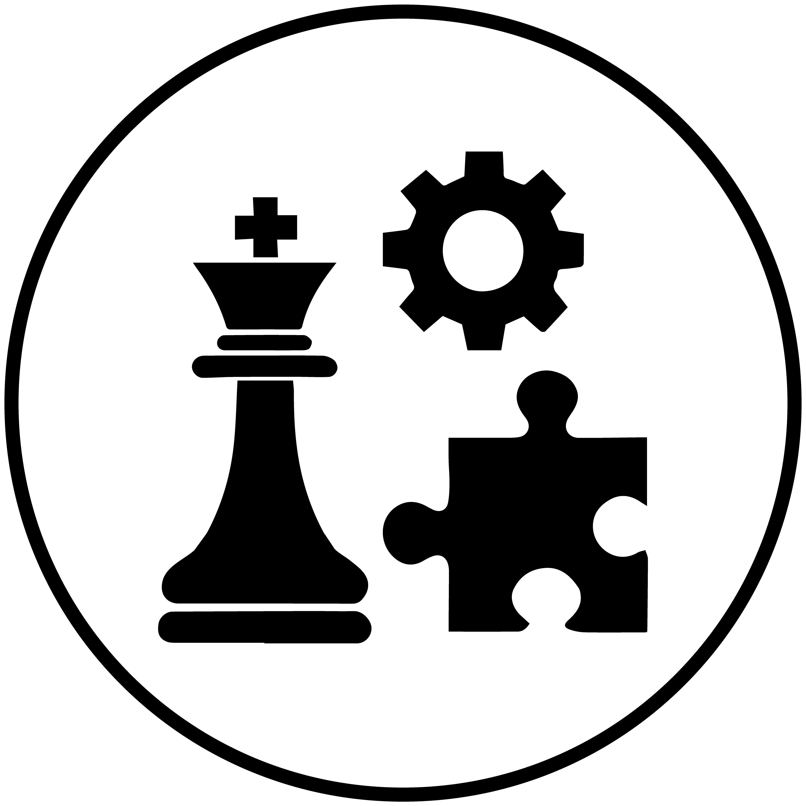
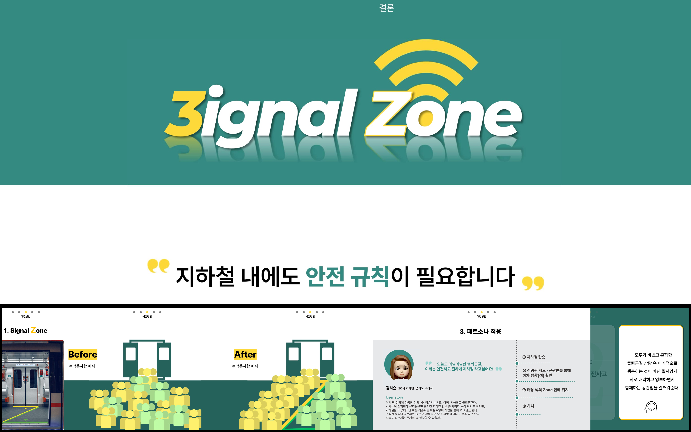

Contribution : Planning 30%, Production 50% (n=5)
Role : Establishing direction, leading meetings
ㅤㅤㅤCreating PPT and mockups, concretizing ideas
Skills Gained Through the Project :

Strategic planning and problem-solving skills

PPT and mockup design skills

Proactive communication skills

We won the Best Presentation Award by proposing an innovative solution, 'Signal Zone,' to address the 'subway congestion problem during commuting hours.'
Initially, the topic was 'transportation issues for people with disabilities,' but I boldly suggested a shift to 'subway congestion problems' and persuaded the team.
During the PPT creation process, I independently identified areas where ideas needed to be concretized and continuously led meetings to develop the team's ideas clearly and specifically.
To solve the issue of internal subway congestion, we proposed the idea of 'Signal Zone.'
This involves placing yellow and green tape in a 'Z' shape inside the subway to create designated waiting areas for passengers based on their exit direction.
Passengers exiting to the left would wait in the yellow zone, and those exiting to the right would wait in the green zone, minimizing inconvenience during exits and promoting order and courtesy.